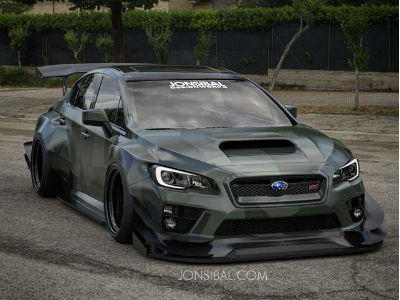
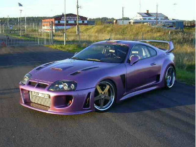

These are the cars we chose to highlight on the website as of right now. Enjoy.

This is a Subaru WRX STI. This car is AWD and is a production car designed based off of Subaru's rally car that won some races in the early 2000's.

This is a Toyota Supra. Until recently, this car has not been too sought after or valuable. But now, people have realized the potential that under the hood of each of these 90's gems.